Analog voice: a semi-modular voice on one 42 HP board
A semi-modular voice in 3U, 42 HP: the series' analog modules on one board, normalled to play with a gate and a pitch CV.
A complete semi-modular voice as one 3U, 42 HP Eurorack module, half an 84 HP row. The series' analog modules sit on one board behind one panel: the utilities on the left (a multiple, a sample and hold with a slew, an LFO), then the voice from left to right in signal order: a VCO with a sub-octave, a mixer with a noise source, the VCF with a feedback knob, an ADSR and a dual VCA, ending in an OUT block.
The circuits are the minimodules' blocks; only their connectors become panel parts, soldered to the board's front under their holes. Normals through the jacks' switch contacts wire up a default voice (the VCO into the mixer, the mixer into the filter, the envelope into the filter and the VCA, the LFO into FM and the S&H's clock), so it plays with nothing patched but a gate and a pitch CV, and every cable replaces one default.
It is a design in progress: the parts are placed and the panel is drawn, but the board isn't routed.
- Status
- In design: parts placed, not routed yet
- Board
- 100 × 100 mm, 2 layers
- Progress
- follow its tracking issue
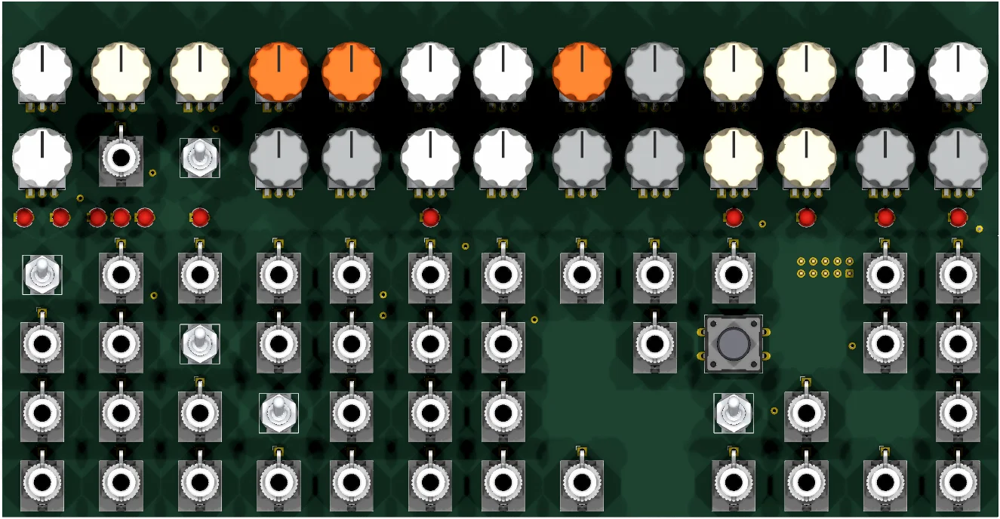
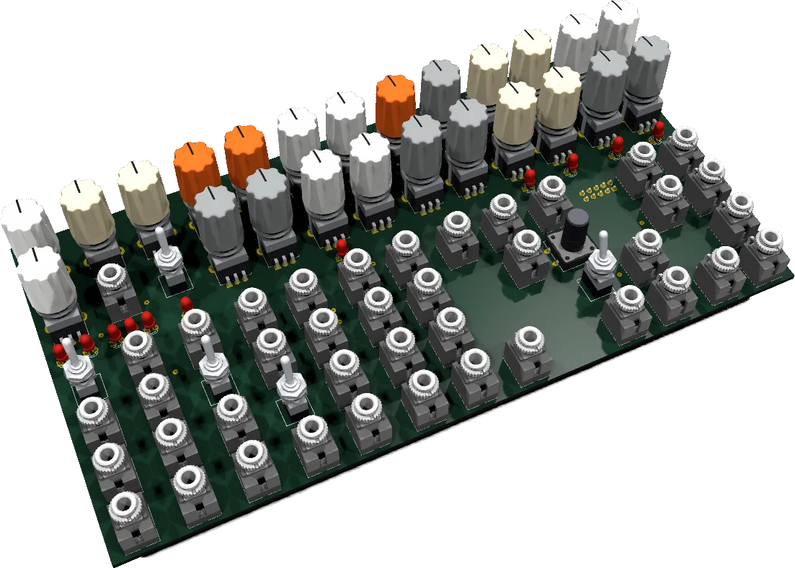
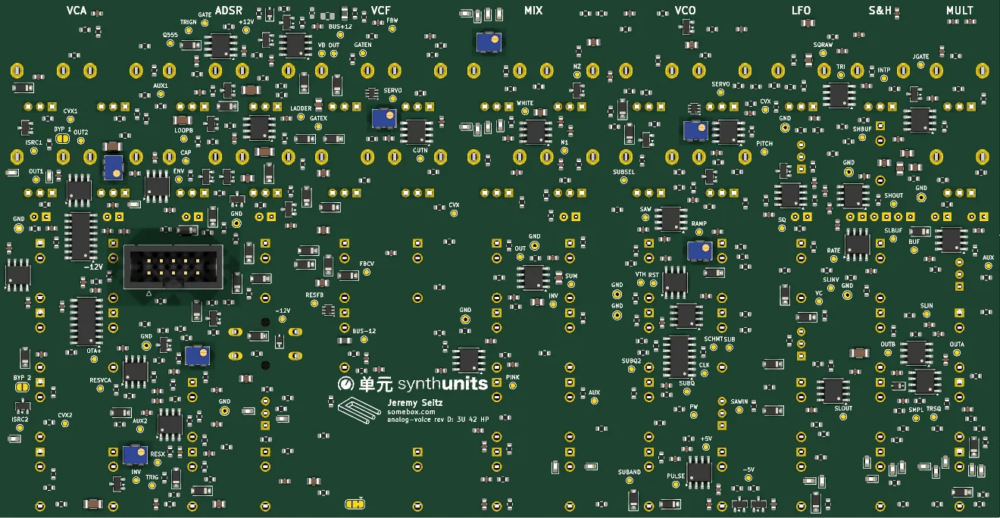
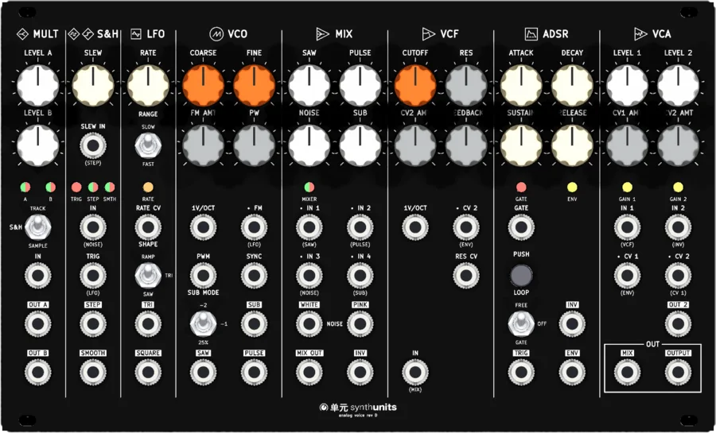
Block diagram
Drawn by the site's generator from the board's own data: its blocks, its connectors and the links between them. The pots and switches are listed in the block they set.
What it does
- Size: 3U, 42 HP; the board 208.56 × 108 mm, 2 layers, behind a 213.06 × 128.5 mm panel.
- Panel: 24 pots, 41 jacks, 5 toggles, a push button and 11 LEDs.
- VCO: saw and pulse with PW and PWM, hard sync and FM; a sub-octave one or two octaves down, or a 25 % pulse.
- MIX: four channels named after their normalled sources (SAW, PULSE, NOISE, SUB), a soft limiter, white and pink noise outputs, and an inverted mix.
- VCF: the four-pole diode ladder with voltage-controlled resonance, and FEEDBACK from its output into its own cutoff, up to about ±0.55 octave.
- ADSR with LOOP and a PUSH button; a dual linear VCA; an LFO from 0.06 Hz to 2.4 kHz with RATE CV and SHAPE; an S&H with a track mode and a slew; a multiple with two attenuated outputs.
- OUT block: MIX (the filter's output, before the VCA) and OUTPUT (VCA 1).
- Levels as the minimodules': ±5 V audio, 1 V/oct pitch, outputs through 1 kΩ.
- Power: Eurorack 10-pin, about 75 to 95 mA on +12 V and 65 to 85 mA on −12 V with the panel LEDs, estimated; no +5 V needed.
Wiring and setup
- Power: a Eurorack 10-pin ribbon into the header on the back, −12 V marked beside pin 1.
- The panel parts (Thonkiconn jacks, Alpha 9 mm pots, Dailywell sub-mini toggles, 3 mm LEDs, a 12 mm tactile switch) are soldered to the board's front under their holes, and the panel nuts hold the board: no brackets.
- Normals: the LFO's TRI into VCO FM; the VCO's SAW and PULSE, white NOISE and SUB into MIX 1 to 4; MIX OUT into VCF IN; the envelope into VCF CV 2 and VCA CV 1; VCF OUT into VCA IN 1; MIX INV into VCA IN 2, whose CV follows CV 1; OUT 2 sums into OUTPUT until patched; white noise into the S&H's IN, the LFO's SQUARE into its TRIG, STEP into SLEW IN. The panel prints each source under its jack.
- With VCA 2 left normalled, LEVEL 2 and CV2 AMT blend the unfiltered mix under the filtered voice, in phase.
- Calibration: the trimmers are on the back, reachable from behind: the VCO's SCALE and HF TRIM, the VCF's SCALE and resonance offset, the VCA's offsets and the noise level, set as on the minimodule boards.
- The VCA's GAIN LEDs carry each channel's control current, so a missing or reversed panel LED silences that channel. Bridge the BYP 1 or BYP 2 jumper to run a channel without its LED.
- 92 test pads on the back, with a ground loop in every section. Each spare on-board input has one, so a signal can be fed in there.
Limits and open questions
- A placement mockup: parts placed, not routed. Not reviewed yet, not built.
- The panel has no room for the minimodules' extras: the VCO's OCTAVE switch, FREQ and WIDTH LEDs, triangle and sine, the VCF's status LEDs and the ADSR's EOC.
- The changes a failure review made to the VCF and ADSR boards before ordering reach this board when it is next generated.
- The push button's height and its cap against the panel aren't checked yet. The toggles' bushings sit in 6.2 mm holes and can slide a little; the 3 mm LEDs need spacers.
- The S&H and the slew drive two LED chains each here, so they clip near ±9.5 V. The ADSR's TRIG is shorter here, about 1.3 ms.
- The power figures are the blocks' estimates.
Development notes
- Rev 1 was four blocks on a 100 × 100 mm four-layer board. Rev B put all ten circuits on a 60 HP board behind a panel. Rev D narrowed it to 42 HP, added the sub-octave, the feedback knob and the OUT block, and moved the utilities to the left so the voice reads left to right.
- Comparing every block with the reference designs I'd bookmarked added the LOOP, SUB MODE and S&H MODE switches, RATE CV, the mixer's limiter, VCA 2's normals and a gentler resonance law.
- FEEDBACK first sent the filter's output back into its input, and in simulation that latched rail to rail above about 90 % of the knob. Now it moves the cutoff instead, after Winterbloom Neptune's Salt (CERN-OHL-P, redrawn): a frequency, not a level, so it can't latch.
- One layout file drives the schematic's normals, the parts' positions and the panel's holes and legends; I iterate the layout as a wireframe first.
- Next: routing on two layers, a review, and the button's stack.
Schematic
The schematic as drawn, with each chip named by its function rather than its part number. The design isn't open source yet, so there are no files to download.

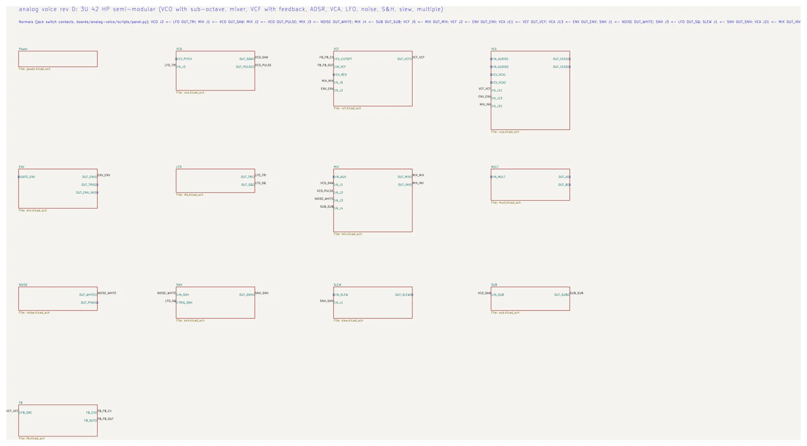

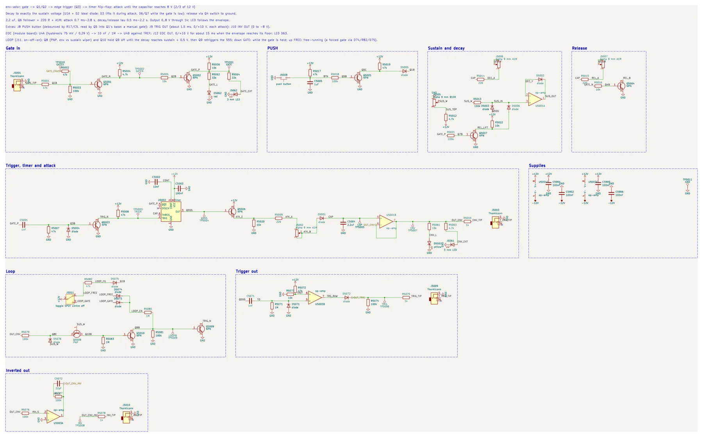

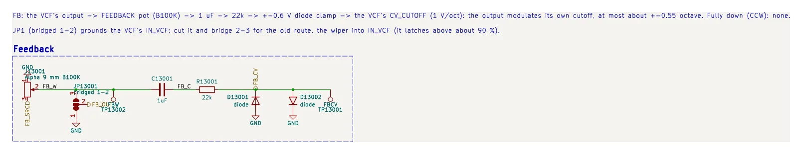

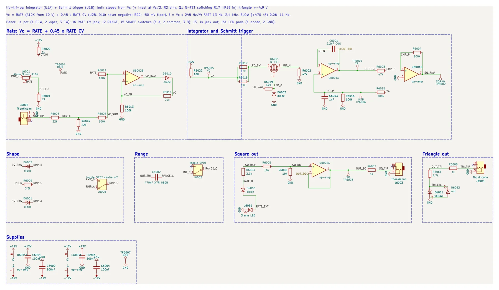

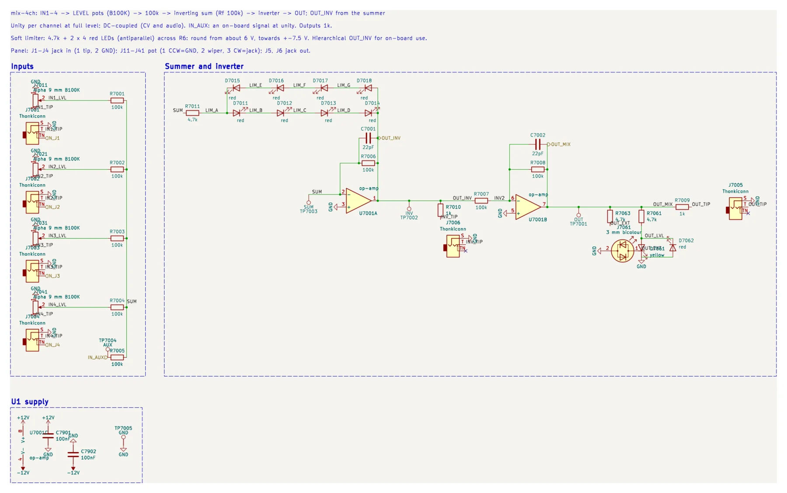

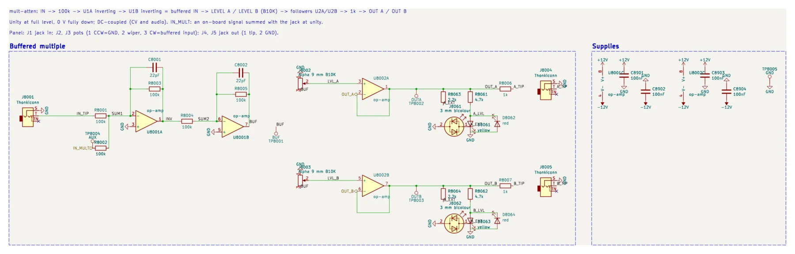

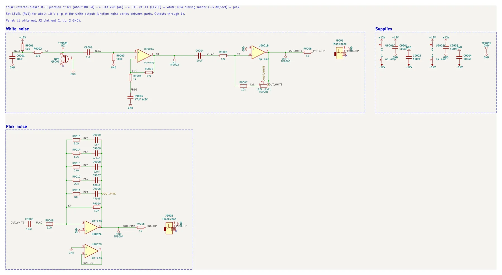


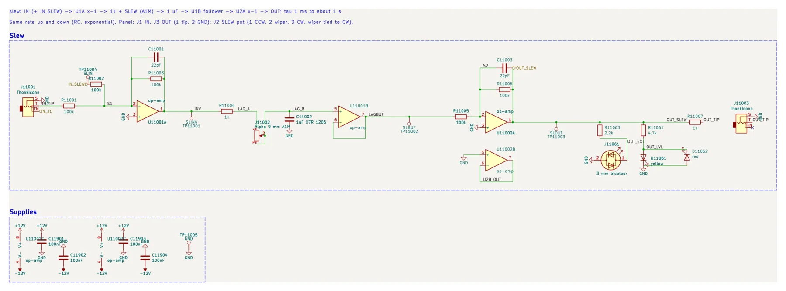

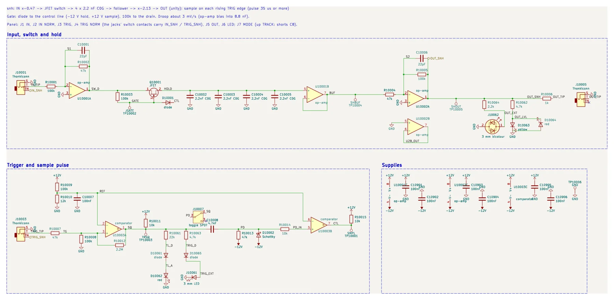

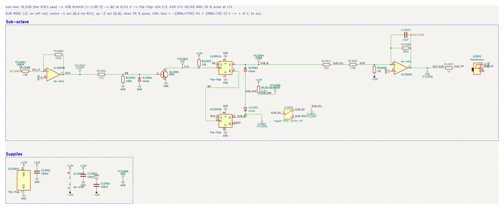

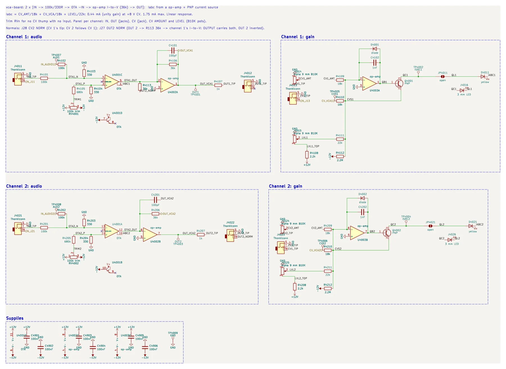

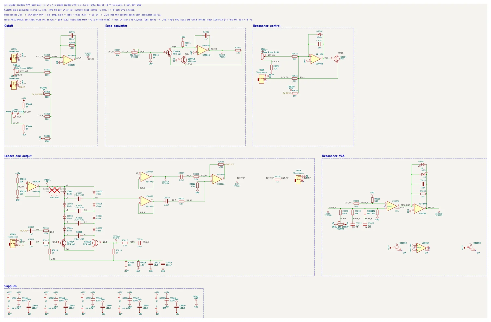

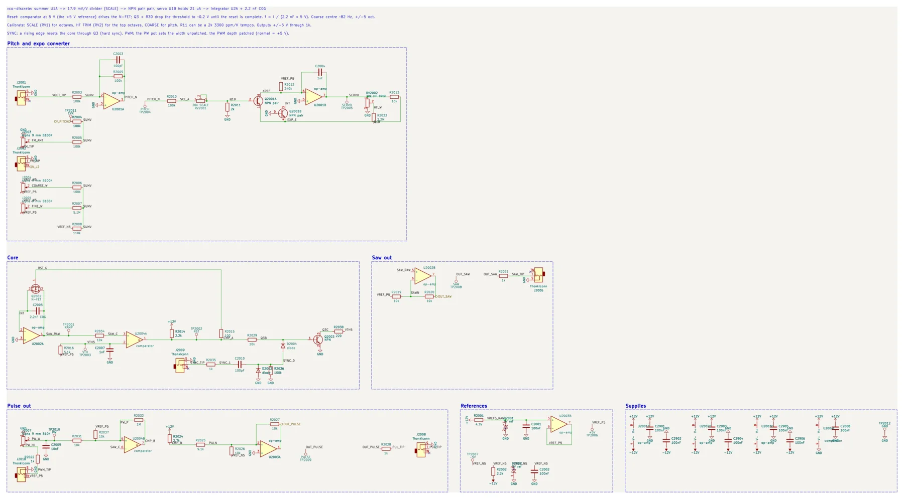
Would you use a VOICE? A thumbs-up on its tracking issue is how I count interest, and you can subscribe there to follow its bring-up. Questions and ideas go to the discussions.